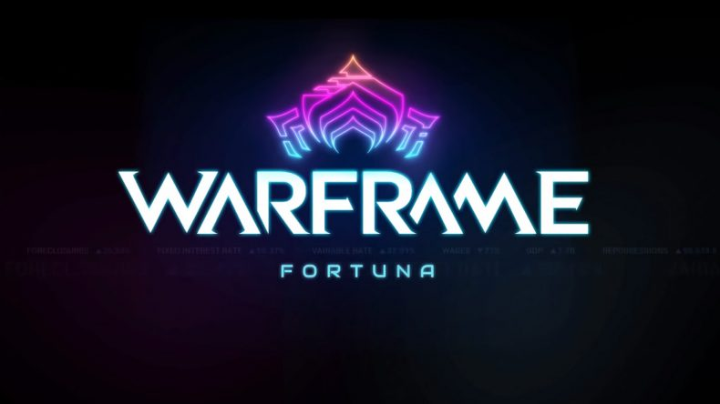

Historia
Fueron llamados tenno. Guerreros de espadas y armas de fuego; maestros de la armadura Warframe. Los que sobrevivieron a la Antigua Guerra quedaron a la deriva entre las ruinas. Ahora son necesitados una vez más. Los grineer, con su vasto ejército, se están extendiendo por todo el Sistema Solar. Una llamada se hace eco a través de las estrellas, convocando a los tenno a un antiguo lugar. Te convocan.
Permite que Lotus te guíe. Ella te ha rescatado de tu cámara criogénica y te ha dado la oportunidad de sobrevivir. Los grineer te encontrarán; debes estar preparado. Lotus te enseñará las formas de los warframes y los secretos para revelar sus poderes. VEN TENNO, DEBES UNIRTE A LA GUERRA.